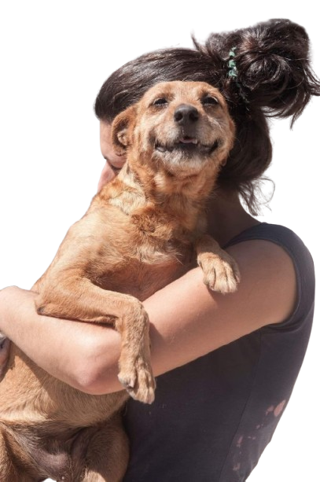

No Brasil, estima-se que mais de 30 milhões de animais vivem em situação de abandono nas ruas. Cães e gatos enfrentam fome, doenças, maus-tratos e acidentes sem nenhuma proteção.
As ONGs de proteção animal são a linha de frente nessa luta. São voluntários que resgatam, veterinários que tratam sem cobrar, lares temporários que acolhem e famílias que se tornam eternas. Sem elas, esses animais simplesmente não teriam chance.
Ao adotar por meio de uma ONG parceira, você não apenas dá um lar, você libera espaço para que outro animal seja salvo. É uma corrente de amor que não para.

Organizações dedicadas a resgatar, cuidar e encontrar um lar para animais.
Conheça, apoie e ajude a espalhar amor!
Mostrando 0 ONGs